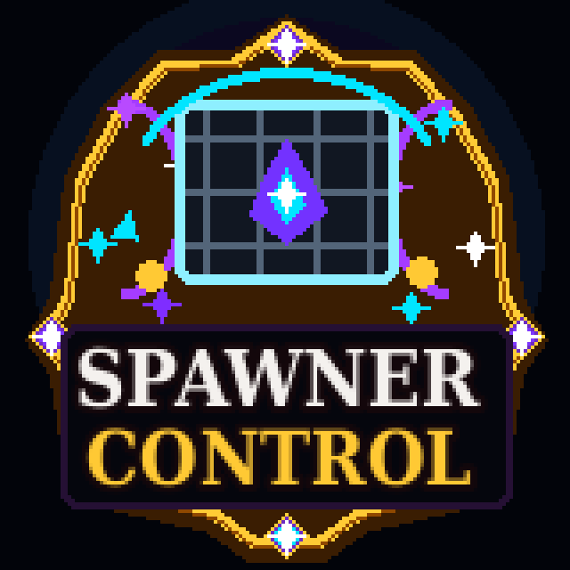

me.Ghoul.SpawnerControl.Main
Direct Release Planned
SpawnerControl
Save, tune and safely apply mob-spawner behaviour per spawner, world and entity type.
—Spigot downloads
—Modrinth downloads
Source verifiedDocumentation status
1.1.0Current version
1.18+API compatibility
Full overview
Save, tune and safely apply mob-spawner behaviour per spawner, world and entity type.
SpawnerControl provides precise control over vanilla CreatureSpawner values without replacing the complete spawning system. Administrators can save settings against individual spawner locations or apply layered defaults across loaded worlds.
Rules are resolved from global defaults, per-world overrides and entity-specific overrides, then passed through optional safety caps. Saved values can be restored when the server starts or when chunks load.
Best suited toSurvival servers that want predictable farms, controlled spawner performance and transparent administrative tuning.
How it works
Look at a spawner, tune its values and persist the result
An administrator targets a spawner within the configured distance and uses /spawnercontrol add or set commands. The plugin reads the current or resolved settings, applies safety caps, updates the block and stores the location in data.yml.
Automatic listeners can apply defaults when spawners are placed, right-clicked, loaded with chunks or found during startup. Filters decide which entity types are eligible, while cleanup settings remove broken or missing saved entries.
- Detailed control without replacing vanilla spawners
- Persistent settings for important farm locations
- World and entity-specific balancing rules
- Safety limits against accidental performance-heavy values
Key features
What the supplied source implements
- Per-spawner saved settings — Store resolved or manually tuned settings against a specific world coordinate.
- Activation range and spawn-radius control — Adjust how close players must be and how far mobs may spawn from the block.
- Spawn count, delay and nearby-entity tuning — Control production rate and the vanilla nearby-mob limiter.
- World and entity overrides — Layer world-specific and Bukkit EntityType-specific rules over global defaults.
- Whitelist or blacklist filtering — Choose whether listed entities are the only allowed types or the only excluded types.
- Configurable safety caps and automatic application — Clamp dangerous values and decide when defaults are applied or saved.
The plugin exposes activation range, spawn range, spawn count, minimum and maximum delay, and maximum nearby entities. Apply-all commands can update currently loaded spawners, while the force option for saved spawners may load chunks and should be used deliberately.
Setup guide
Recommended starting checklist
- Review Defaults and Safety-Caps before allowing automatic application.
- Configure world and entity overrides using exact Bukkit names.
- Choose which startup, chunk-load, placement and right-click application modes should be enabled.
- Use /spawnercontrol info and defaults to verify resolved values before applying them broadly.
Source-grounded documentation
Technical reference from the supplied project
This reference is written into the page as static HTML from the uploaded source project. It does not rely on automatic browser-generated documentation.
✓
Source verifiedSpawnerControl · 7 Java classes
Commands
Command reference
Declared directly in plugin.yml.
| Command | Purpose | Usage | Aliases | Permission |
|---|---|---|---|---|
/spawnercontrol | Save and tune mob spawner behaviour. | /spawnercontrol help | /sc, /spawnctrl, /spawnerctrl | None declared |
Source command usage
Subcommands implemented in Java
These behaviours are present in the supplied command executor even when plugin.yml only declares the root command.
| Usage | Behaviour |
|---|---|
/spawnercontrol help | Show command help and current default activation range. |
/spawnercontrol add [range] | Save the targeted spawner and apply resolved rules. |
/spawnercontrol range <range> | Set the targeted spawner activation range. |
/spawnercontrol set <setting> <value> | Tune player-range, spawn-range, spawn-count, min-delay, max-delay or max-nearby. |
/spawnercontrol remove | Remove the targeted location from saved data. |
/spawnercontrol info | Show current, saved and resolved information for the targeted spawner. |
/spawnercontrol list | List up to ten valid saved spawners. |
/spawnercontrol apply [force] | Reapply saved settings; force permits chunk loading. |
/spawnercontrol applyall [world] | Apply config rules to loaded spawners globally or in one world. |
/spawnercontrol defaults | Display the resolved global defaults and safety-cap state. |
/spawnercontrol reload | Reload config.yml and saved data. |
Permissions
Permission reference
Defaults and descriptions are taken from the supplied plugin descriptor.
| Permission | Description | Default |
|---|---|---|
spawnercontrol.admin | Allows access to SpawnerControl admin commands. | op |
Configuration
Bundled configuration files
Expand a file to inspect detected configuration paths. Repeated list entries are intentionally condensed.
config.yml48 detected key paths
SettingsSettings.Max-Target-DistanceSettings.Apply-Saved-Spawners-On-StartupSettings.Apply-Saved-Spawners-On-Chunk-LoadSettings.Apply-Defaults-To-Loaded-Spawners-On-StartupSettings.Apply-Defaults-On-Chunk-LoadSettings.Apply-Defaults-On-PlaceSettings.Apply-Defaults-On-Right-ClickSettings.Save-Placed-SpawnersSettings.Save-Right-Clicked-SpawnersSettings.Save-Defaults-Applied-On-Chunk-LoadSettings.Save-When-Startup-Apply-AllSettings.Save-When-Apply-AllSettings.Show-Info-On-Admin-Right-ClickSettings.Remove-Broken-Spawners-From-DataSettings.Remove-Missing-Spawners-From-DataDefaultsDefaults.Required-Player-RangeDefaults.Spawn-RangeDefaults.Spawn-CountDefaults.Min-Spawn-DelayDefaults.Max-Spawn-DelayDefaults.Max-Nearby-EntitiesWorld-OverridesWorld-Overrides.world_netherWorld-Overrides.world_nether.Required-Player-RangeWorld-Overrides.world_nether.Spawn-RangeWorld-Overrides.world_the_endWorld-Overrides.world_the_end.Required-Player-RangeWorld-Overrides.world_the_end.Spawn-RangeEntity-OverridesEntity-Overrides.ZOMBIEEntity-Overrides.ZOMBIE.Required-Player-RangeEntity-Overrides.SKELETONEntity-Overrides.SKELETON.Required-Player-RangeEntity-Overrides.BLAZEEntity-Overrides.BLAZE.Required-Player-RangeEntity-Overrides.BLAZE.Max-Nearby-EntitiesFiltersFilters.ModeFilters.EntitiesSafety-CapsSafety-Caps.EnabledSafety-Caps.Max-Required-Player-RangeSafety-Caps.Max-Spawn-RangeSafety-Caps.Max-Spawn-CountSafety-Caps.Min-Spawn-Delay-FloorSafety-Caps.Max-Nearby-Entities
Tokens & placeholders
Detected substitution tokens
Literal tokens found in source files and bundled configuration.
No literal substitution tokens were detected.
These are literal tokens found in the supplied source and bundled YAML files. Some are message-command substitutions rather than PlaceholderAPI identifiers.
Architecture
Source organisation
A concise map of the supplied implementation, useful for administrators and developers evaluating the project.
Packages
commands1 classesdata1 classeslisteners1 classesmodels1 classesrules1 classesutils1 classesme.Ghoul.SpawnerControl1 classes
Key implementation classes
MainSpawnerControlCommandSpawnerControlListenerSpawnerDataManagerSpawnerRuleResolverSpawnerSettingsSpawnerUtil
API and integration classes
No dedicated API, hook, provider or expansion classes were detected by name.